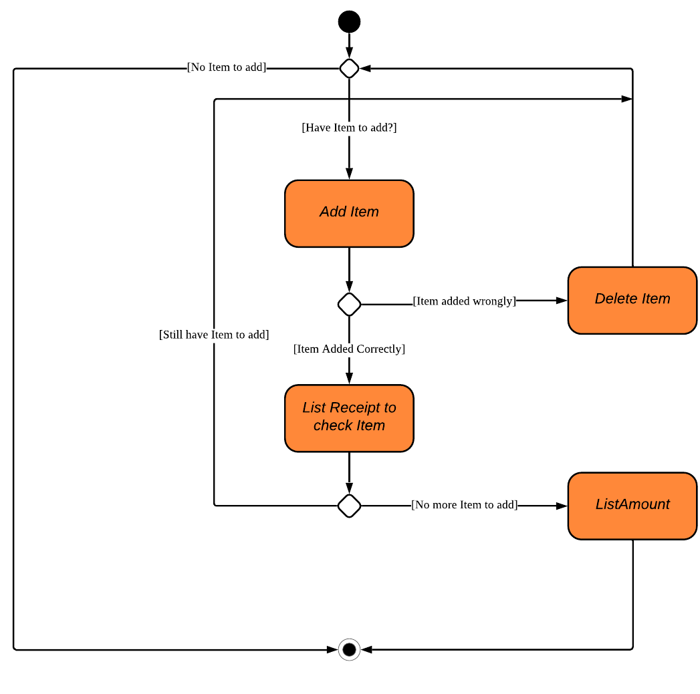

Overview
EYELAH is a desktop application specifically programmed for Freshmen staying on NUS Campus. It aims to ease their lives at halls/residential colleges by providing them with an application to split bills easily and help them track their diet. The user interacts with it using a CLI and it is programmed using JAVA 11.
Summary of contributions
-
Major enhancement: [In Process]
-
What it does:
-
Justification:
-
Highlights:
-
Credits: {mention here if you reused any code/ideas from elsewhere or if a third-party library is heavily used in the feature so that a reader can make a more accurate judgement of how much effort went into the feature}
-
Adding of ItemClass, ItemPrice, ItemName for the Expense Splitter portion of EYLAH
-
What it does: Item is used when User wants to calculate how much each Person(s) must pay for that Item.
-
Justifcation:
-
Highlights: Implementing the ItemPrice was a little tricky because Double should not be used to hold Currency as it will lead to rounding errors. Upon further research on Stack Overflow, I decided that BigDecimal will be a better type to hold currency
-
Credits: Online links where I researched on: "https://stackoverflow.com/questions/1359817/using-bigdecimal-to-work-with-currencies"
-
-
Adding of PaidCommand, ListReceipt Command and BackCommand for the Expense Splitter portion of EYLAH
-
What it does: These commands are essential for Expense Splitter of EYLAH
-
Justifcation:
-
Highlights:
-
Credits:
-
-
Integrating Storage into Expense Splitter portion of EYLAH
-
What it does: Storage component is essential for Expense Splitter of EYLAH as it needs to save PersonName and Amount
-
Justifcation:
-
Highlights:
-
Credits:
-
-
-
Minor enhancement: [In Process]
-
Drew Expense Spliter portion of UML Class diagram

(Excluding the Height Class)
-
Added tests for ItemTest, ItemName, ItemPrice
-
Assisted in downscaling of AddressBook3 by removing Email object
-
Drew Activity Diagram for Expense Spliter portion of EYLAH

-
-
Code contributed: [Functional code] [Test code] {give links to collated code files}
-
Other contributions:
-
Project management:
-
In charge of team facilitation and code integration.
-
Participated in planning the project timeline for EYLAH.
-
-
Enhancements to existing features:
-
Adapted the given Address Book UI into EYLAH’s first draft UI. https://github.com/
-
-
Documentation:
-
To be added
-
-
Community:
-
Tools:
-
Contributions to the User Guide
Given below are sections I contributed to the User Guide. They showcase my ability to write documentation targeting end-users. |
Contributions to the Developer Guide
Given below are sections I contributed to the Developer Guide. They showcase my ability to write technical documentation and the technical depth of my contributions to the project. |
DietTracker feature
The Diet Tracker feature is designed to aid our users in maintaining a healthy lifestyle. The feature comprises of 9 Commands.
-
AddCommand- Creates a new Food object with its attributes (Name, Calories) and adds it to the FoodBook Storage. -
DeleteCommand- Deletes the Food specified by the input index from FoodBook Storage. -
ListCommand- Lists the Foods and its attributes (Name, Calories) for the timeframe specified by users based on their user input. -
EditCommand- Allows the user to edit an of the Food in Storage. -
BmiCommand- Calculates the BMI. -
HeightCommand- Allows users to log their Height in centimeters. -
WeightCommand- Allows users to log their Weight in kilograms. -
ModeCommand- Allows users to toggle between different modes of the diet tracker. -
HelpCommand- Provides a help guide for users based on what commands are available.
Below are some diagrams to explain how our team implemented this portion.
Activity Diagram of Diet Tracker:
Delete Command
Implementation
The following is a detailed explanation of the operations DeleteCommand performs.
-
The
DeleteCommand#execute(Model model)method is executed and it validates that the specifiedINDEXto delete is within range. If valid, the item to be deleted will be retrieved from Storage using itsIndex. -
The method
Model#getFilteredFoodList() will then be called to retrieve the List of Foods from Storage. `List#get(int Index)is then invoked which retrieves the specified Food to be deleted. -
The method
Model#deleteFood(Food food) will then be called to remove the Item from the List. `FoodBook#remove(int Index)is invoked which makes a call to its internal list to remove the specified Food. -
If successful, a success message will be generated by
CommandResultand it will be returned with the generated success message. Otherwise, an error message showing the correct command syntax is thrown asCommandException. -
If the command syntax was valid and Food was removed from FoodBook,
LogicManagercallsFoodBookStorage#saveFoodBook(ReadOnlyFoodBook foodBook)which saves the new Foods into JSON format after serializing it usingJsonAdaptedFood.
The following is a sample sequence diagram of the DeleteItemCommand.

Help Command
The undo/redo mechanism is facilitated by VersionedAddressBook.
It extends AddressBook with an undo/redo history, stored internally as an addressBookStateList and currentStatePointer.
Additionally, it implements the following operations:
-
VersionedAddressBook#commit()— Saves the current address book state in its history. -
VersionedAddressBook#undo()— Restores the previous address book state from its history. -
VersionedAddressBook#redo()— Restores a previously undone address book state from its history.
These operations are exposed in the Model interface as Model#commitAddressBook(), Model#undoAddressBook() and Model#redoAddressBook() respectively.
Given below is an example usage scenario and how the undo/redo mechanism behaves at each step.
Step 1. The user launches the application for the first time. The VersionedAddressBook will be initialized with the initial address book state, and the currentStatePointer pointing to that single address book state.

Step 2. The user executes delete 5 command to delete the 5th person in the address book. The delete command calls Model#commitAddressBook(), causing the modified state of the address book after the delete 5 command executes to be saved in the addressBookStateList, and the currentStatePointer is shifted to the newly inserted address book state.

Step 3. The user executes add n/David … to add a new person. The add command also calls Model#commitAddressBook(), causing another modified address book state to be saved into the addressBookStateList.

If a command fails its execution, it will not call Model#commitAddressBook(), so the address book state will not be saved into the addressBookStateList.
|
Step 4. The user now decides that adding the person was a mistake, and decides to undo that action by executing the undo command. The undo command will call Model#undoAddressBook(), which will shift the currentStatePointer once to the left, pointing it to the previous address book state, and restores the address book to that state.

If the currentStatePointer is at index 0, pointing to the initial address book state, then there are no previous address book states to restore. The undo command uses Model#canUndoAddressBook() to check if this is the case. If so, it will return an error to the user rather than attempting to perform the undo.
|
The following sequence diagram shows how the undo operation works:

The lifeline for UndoCommand should end at the destroy marker (X) but due to a limitation of PlantUML, the lifeline reaches the end of diagram.
|
The redo command does the opposite — it calls Model#redoAddressBook(), which shifts the currentStatePointer once to the right, pointing to the previously undone state, and restores the address book to that state.
If the currentStatePointer is at index addressBookStateList.size() - 1, pointing to the latest address book state, then there are no undone address book states to restore. The redo command uses Model#canRedoAddressBook() to check if this is the case. If so, it will return an error to the user rather than attempting to perform the redo.
|
Step 5. The user then decides to execute the command list. Commands that do not modify the address book, such as list, will usually not call Model#commitAddressBook(), Model#undoAddressBook() or Model#redoAddressBook(). Thus, the addressBookStateList remains unchanged.

Step 6. The user executes clear, which calls Model#commitAddressBook(). Since the currentStatePointer is not pointing at the end of the addressBookStateList, all address book states after the currentStatePointer will be purged. We designed it this way because it no longer makes sense to redo the add n/David … command. This is the behavior that most modern desktop applications follow.

The following activity diagram summarizes what happens when a user executes a new command:

Design Considerations
Aspect: How undo & redo executes
-
Alternative 1 (current choice): Saves the entire address book.
-
Pros: Easy to implement.
-
Cons: May have performance issues in terms of memory usage.
-
-
Alternative 2: Individual command knows how to undo/redo by itself.
-
Pros: Will use less memory (e.g. for
delete, just save the person being deleted). -
Cons: We must ensure that the implementation of each individual command are correct.
-
Aspect: Data structure to support the undo/redo commands
-
Alternative 1 (current choice): Use a list to store the history of address book states.
-
Pros: Easy for new Computer Science student undergraduates to understand, who are likely to be the new incoming developers of our project.
-
Cons: Logic is duplicated twice. For example, when a new command is executed, we must remember to update both
HistoryManagerandVersionedAddressBook.
-
-
Alternative 2: Use
HistoryManagerfor undo/redo-
Pros: We do not need to maintain a separate list, and just reuse what is already in the codebase.
-
Cons: Requires dealing with commands that have already been undone: We must remember to skip these commands. Violates Single Responsibility Principle and Separation of Concerns as
HistoryManagernow needs to do two different things.
-
PROJECT: PowerPointLabs
{Optionally, you may include other projects in your portfolio.}
Questions to ask:
1. is BigDecimal the best way to represent currency?
2. under ItemPriceTest, instead of assertFalse can I assertThrows because BigDecimal
will throw an exception? Because in AB3 everything there is assertFalse
3.